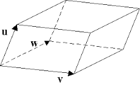

Ders 3
Bugünkü dersin konusu dış dünyayı modellemek, kamera hareketini temsil edebilmek, bu sırada Lie grupları, Lie cebirini de öğreneceğiz. Lie grubu, adı üstünde bir grup, fakat ek olarak bazı ek tanımlar içeriyor. Örnek olarak kamera hareketi bir Lie grubu oluşturuyor. Kamera transformasyonunun (hareketinin) tersi alınabilir, ki genel Lie grupları için de bu mümkün, tabii bu fiziksel kamera hareketi için de doğru, kameraya başlattığımız noktaya geri getirebiliriz. Ama esas önemli nokta şu: kameranın hareketini sürekli bir ortamda tanımlamak mümkün - sonsuz küçüklükteki (infinitesimal) kamera hareketleri tanımlanabilir, ki bu durum kamera hareketini Lie grubu yapan en önemli faktör.
Üç Boyutlu Öklit Uzayı
Üç boyutlu Öklit uzayı $\mathbb{E}^3$, tüm $p \in \mathbb{E}^3$ noktalarından oluşur, ki bu noktalar
$$ X = \left[\begin{array}{ccc} X_1,X_2,X_3 \end{array}\right]^T \in \mathbb{R}^3$$
kordinatları ile karakterize edilir. $\mathbb{E}^3$ ve $\mathbb{R}^3$ aynı olarak kabul edilebilir.
Eldeki iki nokta $X,Y$ için
$$ v = Y - X \in \mathbb{R}^3$$
Bir vektör elde ettik, ki bu vektör (diğer tüm vektörler gibi) başlangıç noktasından bağımsız. $\mathbb{R}^3$ içindeki tüm vektörler bir lineer vektör uzayı oluşturur. $\mathbb{E}^3$'u $\mathbb{R}^3$ ile eş kabul ettik, o zaman $\mathbb{R}^3$'den tek sayı çarpımı, norm, ölçekler gibi özellikleri alabiliriz, bu sayede uzaklıkları, ya da eğri uzunluğu gibi şeyleri hesaplayabiliriz, mesela
$$ I(\gamma) = \int_{0}^{1} | \dot{\gamma}(s)| \mathrm{d} s $$
ki bu herhangi bir $\gamma: [0,1] \to \mathbb{R}^3$ eğrisi için. Formüldeki $||$ bir Öklitsel norm, $\mathbb{R}^3$'ten geliyor.
Çapraz çarpımı görmüştük.
Tüm $3 \times 3$ eksi bakışımlı matrislerin uzayı so(3) olarak gösterilir, dikkat daha önce SO(3) vardı, özel dikgen matrislerin uzayı. Bu so(3), küçük harfli olan, farklı. Ne şekilde onu birazdan göreceğiz. Aradaki bağlantıyı hemen belirtebilirim ama, SO(3) bir Lie grup, so(3) onunla ilişkili olan Lie cebiri.
Daha önce katı gövde transformasyonundan bahsettik, ve kamera hareketi böyledir dedik; yani yer değişimi + rotasyon. Fakat katı gövde hareketini tanıştırmanın bir değişik yolu daha var, hatta bu yol katı gövde tanımındaki "katı" kelimesine daha uygun, bu tanıma göre bir objenin üzerinde iki nokta düşünelim, bu iki nokta arasındaki mesafe transformasyon ardından değişmeden kalmalı. İşte bu sebeple gövde "katı" çünkü değişmiyor. Formel olarak belirtmek gerekirse katı gövde transformasyonları su aileye
$$ g_t: \mathbb{R}^3 \to \mathbb{R}^3; \qquad X \to g_t(X), \qquad t \in [0,T] $$
ait olan eşlemelerdir (yani fonksiyonlardır) öyle ki herhangi iki vektörün norm ve çapraz çarpımı muhafaza edilir,
$$ |g_t(v)| = |v|, \quad \forall v \in \mathbb{R}^3 $$
$$ g_t(u) \times g_t(v) = g_t(u \times v), \quad \forall u,v \in \mathbb{R}^3 $$
Üstteki tanım aynı zamanda noktasal çarpımın da değişmediği anlamına geliyor, bu üstteki tanımdan bariz olmayabilir, ama norm ve tek sayı çarpımı kutupsal özdeşlik (polarization identity) üzerinden norm ile alakalı olduğu için,
$$ \langle u,v \rangle = \frac{1}{4} ( |u+v|^2 - |u-v|^2 ) $$
o zaman noktasal çarpımın da değişmemesi gerekir.
Daha bitmedi: eğer üstteki üç tanım doğru ise o zaman üçlü çarpım (triple product) da muhafaza edilir demektir, ki $\forall u,v,w \in \mathbb{R}^3$ için
$$ \langle g_t(u), g_t(v) \times g_t(w) \rangle = \langle u, v\times w \rangle $$
eşitliği doğru olmalıdır. Bu ifade aynı zamanda katı gövde transformasyonun "hacmi muhafaza ettiği" anlamına da gelir, çünkü üstteki ifade hacim hesabı için kullanılır. Lise matematiğinden hatırlanacağı üzere,

üç vektörün kapsadığı hacmin hesabı üstteki formüldür. Yani katı gövde hareketi üçlü çarpımı muhafaza ediliyor demek, bu da hacmi muhafaza ediyor demektir. Bazı hareketler vardır ki katı gövde değildir, mesela bir süngeri alıyorum, sıkıştırıyorum, bu hareket hacmi muhafaza etmedi.
Peki üstteki tanım katı gövde hareketini kesinlikle temsil eder mi? Bunu formel bir şekilde göstermek istiyoruz; transformasyon $g_t$, ki $t$ anındaki katı gövde değişimini gösteriyor. Bu ispat için değişimin bir orijin ve 3 tane birimdik (orthonormal) vektör $e_1,e_2,e_3 \in \mathbb{R}^3$'u nasıl etkilediğini göstermem yeterli. Diğer her nokta bu baza referanslı olacağı için bu yeterli oluyor. Orijinin hareketini yer değişimi $T \in \mathbb{R}^3$ olarak göstereyim, vektör $e_i$'ların transformasyonu ise $r_i = g_t(e_i)$, bu transformasyon sonrası yeni bir baz elde etmiş olacağız.
Tek sayı ve çapraz çarpımı muhafaza edilir demiştik, yani
$$ r_i^Tr_j = g_t(e_i)^Tg_t(e_j) = e_i^Te_j = \delta_{ij}, \qquad r_1 \times r_2 = r_3 $$
$\delta_{ij}$ hatırlarsak $i=j$ ise 1, değil ise 0 veren bir notasyonel ifade.
Üstteki 1. kısıtlama matris $R = \left[\begin{array}{ccc} r_1&r_2&r_3 \end{array}\right]^T$ dikgen (rotasyon) matrisi demek ile aynı şeydir, yani $R^TR = RR^T = I$. Ve çapraz çarpımlı 2. ifade $\det(R) = +1$ demektir, yani $R$ matrisi,
$$SO(3) = { R \in \mathbb{R}^{3 \times 3} \mid R^TR = I, \det(R) = +1}$$
grubunun bir üyesidir. Ve evet, katı gövde hareketi hakikaten de
$$ g_t(x) = Rx + T $$
olarak yazılabilir.
Rotasyon matrisine yakında bakalım. Dediğimiz gibi bir açı üzerinden rotasyon yapabiliriz, ve tüm bu rotasyonlar bir grup oluşturur. Sonsuz küçük rotasyon da mümkündür, kamerayı alırım, azıcık döndürürüm. Bu döndürme gruptaki bir öğeye tekabül eder. Bu her türlü grup için geçerli olmayabilir, mesela içinde yine sonsuz tane öğe olan tam sayıları alsam, azıcık değişimi bu küme içinde temsil edemezdim, çünkü öğeler ayrıksal (discrete).
Niye sonsuz küçüklükteki rotasyonlara bakıyoruz? Rotasyonları temsil etmek aslında külfetli bir iş; mesela rotasyonların olduğu uzay lineer değil, iki rotasyon matrisi $R,\tilde{R}$'yi alsam mesela ve onları toplasam (ki böylece bir toplam döndürmeyi hesaplayacağımı umardım) yeni bir rotasyon matrisi elde edemiyorum. Zorluk aslında $R^TR=I$ ve $\det(R)=+1$ kısıtlamalarından ileri geliyor. Mesela iki resim var, bu resme bakarım bir kameranın nasıl döndüğünü göstermek istiyorum, rotasyon matrisi şöyle olacak,
$$ \left[\begin{array}{rrr} a & b & c \\ d & e & f \\ g & h & i \end{array}\right] $$
Bu matristeki değişkenlerin değerini atamakta serbest olamıyorum, dediğim gibi, belirtilen iki kısıtlamaya uymam lazım. Yani bir optimizasyon işletip üstteki 9 değişkeni hesaplamaya uğraşırken bir de onun üstüne 2 tane çok ağır şarta da uymam lazım. Bu şartlardan en ağırı determinant aslında.
O zaman sonsuz küçüklükteki rotasyonun temsilini türetelim; bir rotasyon ailesini temsil eden $R(t)$ olsun, ki bir noktayı sürekli transform ediyorlar, başlangıç noktası $R(0) = I$, yani birim matrisi,
$$ X_{trans}(t) = R(t) X_{orig}, \qquad R(t) \in SO(3) $$
Bir $X_{orig}$ noktasını aldım, ve her $t$ anında döndürüyorum, sonuç $X_{trans}$. Tabii noktanın yeri değişmiyor, ama kameranın ekseni değiştiği için ona göre nokta değişmiş gibi oluyor.
$R(t)R(t)^T = I$, $\forall t$ olduğu için (olmalı çünkü rotasyon matrisleri dikgen) bu aynı anda, her $t$ anı için bu çarpımın sabit olduğu sonucunu verir, ve her $t$ için sabit olan bir şeyin, Analiz dersinden hatırlayabileceğimiz üzere, $t$'ye göre türevi sıfır olmalıdır. Yani,
$$ \frac{d}{dt} (RR^T) = \dot{R}R^T + R \dot{R}^T = 0 $$
$$ \dot{R}R^T = - (\dot{R}R^T)^T $$
Bu bize $\dot{R}R^T$'nin eksi bakışımlı matris olması gerektiğini söylüyor, yani önceden $\land$ operatörü ile ulaştığımız bir sonuç noktası. O sonuç noktasına $\hat{w}(t)$ diyelim,
$$\dot{R}(t)R^T(t) = \hat{w}(t)$$
Sağdan $R(t)$ ile çarpalım,
$$\dot{R}(t) = \hat{w}(t)R(t)$$
$R(0)=I$ olduğuna göre, üstte yerine koyalım,
$$\dot{R}(0) = \hat{w}(0) $$
Bu demektir ki eksi bakışımlı matris $ \hat{w}(0) \in so(3)$ bize birim matris $I$ etrafında rotasyon için 1. derece bir yaklaşıksallık sağlıyor, yani
$$ R(dt) = R(0) + dR = I + \hat{w}(0) dt $$
Yani rotasyonu bir teğet uzayında harekete çevirmiş oldum. Bu uzaya Lie cebiri ismi veriliyor. Elde ettiğim avantaj bir teğet uzayının, $\hat{w}(0)$ yönünde, daha rahat işlem yapabilmeme izin vermesi. Bu uzayın öğeleri eksi bakışımlı matrisler, yani köşegenleri sıfır, bazı öğeleri dolu, vs. ve serbestlik derecesi 3 olan rotasyon bir uzay bu. Eğer rotasyonları 9 öğesi dolu olan bir matris, onun üstüne iki tane kısıtlama üzerinden tanımlasaydım, işler arap saçına dönecekti. Eksi bakışımlı matrisler üzerinde işlemler çok daha rahat oldu.
Kamera hareketinin kestirilmesi / hesaplanması için yapılan budur; Lie cebiri içinde, o lineer uzayda kalarak bir hesap yapmak böylece kamera hareketini yaklaşıksal olarak bulmak. Bunu sadece 3 serbestlik derecesi üzerinden yapabilirim, başka hiçbir kısıtlamaya bakmam gerekmez. Kısıtlamaları dikkate alarak yapılması gereken optimizasyon çok saç yolduracak bir iştir. Bundan mümkün olduğunca kaçınmak gerekir.
Üstte yaptıklarımız işin ruhu olarak şuna da benzeyebilir: Mesela rotasyon şu şekilde de gösterilebilir,
$$ \left[\begin{array}{rrr} \cos \theta & -\sin \theta \\ \sin \theta & \cos \theta \end{array}\right] $$
$\theta=0$ dersem birim matrisi elde ederim. Şimdi diyelim ki sıfır değil ama "sıfıra çok yakın" bir değerim var; matristeki terimler için bir Taylor açılımı yapabilirim, ve 1. derece terimleri kullanırsam,
$$ \left[\begin{array}{rr} \theta & 0 \\ 0 & \theta \end{array}\right] $$
elde ederim, ki bu matris bir eksi bakışımlı matristir, birim matris artı üstteki değişime geldik. Ama tabii tek düzlemde olunca zaten tek serbestlik derecesi var, $\theta$. Ama üç boyutlu rotasyon söz konusu olunca ifade üstteki kadar temiz olmuyor, ki Lie cebirine vs. bunun için giriyoruz.
Ana konumuza dönelim; Tüm rotasyonlar Lie grubu, teğet uzayı Lie cebiri. Gösterdik ki sonsuz küçük bir dönüş $R \in SO(3)$'un etkisi, eksi bakışımlı matrisler uzayının
$$ so(3) = { \hat{w} \mid w \in \mathbb{R}^3} $$
bir öğesi ile yaklaşıksal olarak temsil edilebilir. Bu rotasyon grubu SO(3) Lie grubudur, so(3) ise Lie cebiridir.
Tanım
Bir Lie grup (ya da sonsuz ufak grup) aynı anda hem grup hem de bir pürüzsüz bükümdür (smooth manifold). Grup operasyonları çarpma ve tersini alma bir pürüzsüz eşlemedir (smooth maps). Gösterdik ki birim matris noktasında rotasyon grubu SO(3)'un teğeti so(3) Lie cebiri.
Pek çok değişik Lie grubu vardır, ama bilimde en yaygın kullanılanı SO(3). Ayrıca yer değiştirme için gereken SE(3) grubu (özel Öklitsel grup).
Bu arada "cebir" kelimesi kafa karıştırmasın; burada cebir kelimesinin soyut matematikteki anlamını kullanıyoruz, yani bir alan (field) üzerinde tanımlanmış olan cebir, bu tanım çarpım operasyonu ile bir vektör uzayı $V$'nin $K$ üzerinde $V$'deki bir çarpım üzerinden.
[Lie bracket atlandı]
Peki Lie cebirden Lie grubuna geri nasıl giderdik? Bunun için üstel fonksiyonlar (exponential functions) kullanılacak, yani Lie cebirden Lie gruba gidiş üstel fonksiyonlar ile eşlenmiştir. Niye, sebebini göreceğiz, çok zor bir kavram değil.
Elimizde bir rotasyon grubu olduğunda eksi bakışımlı matrisler üzerinden sonsuz küçüklük formülasyonuyla rotasyon modelini belirttik. Peki bu modeli kullanarak $R(t)$ için bir model bulabilir miyiz? $\hat{w}$ sabit olsun, diferansiyel denklem sistemi,
$$ \dot{R}(t) = \hat{w} R(t) \qquad (4) $$
$$ R(0) = I $$
Bu sistemi çözmeye uğraşalım. Elimizde 1. derece türev var (ilk formül) ki bu formül rotasyon matrisindeki değişimi gösteriyor, ve başlangıç şartı var (ikinci formül). Fakat basit lineer denklemlerden biliyoruz ki değişkenin değişimi bir sabit üzerinden o değişkeni bağlıysa, çözüm bir üstel çürüme (decay) ya da üstel büyüme (growth) üzerinden modellenir. Matris durumunda da benzer bir sonuç var,
$$ R(t) = e^{\hat{w} t} $$
Üstel fonksiyonların ayrıca seri olarak açılımı da var, tek değişkenli basit durum,
$$ e^x = \sum_{n=0}^{\infty} \frac{x^n}{n!} $$
Matris bazlı problemimiz için,
$$ R(t) = e^{\hat{w} t} = \sum_{n=0}^{\infty} \frac{(\hat{w}t)^n}{n!} = I + \hat{w}t + \frac{(\hat{w}t)^2}{2!}+... $$
Bu $R(t)$ ifadesi bir $w \in \mathbb{R}^3$ ekseni etrafında $t$ açısı kadar olacak bir dönüşü temsil eder (eğer $||w||=1$ ise).
Alternatif olarak skalar $t$'yi eksi bakışımlı matris $\hat{w}$ içine çekebiliriz, ki $\hat{v} = \hat{w}t$ olacak şekilde, bu durumda $R(t) = e^{\hat{v}}$ olur.
Böylece bir matris üsteli üzerinden Lie cebirinden Lie grubuna geçiş yapabilmiş olduk,
$$ \exp: so(3) \to SO(3); \qquad \hat{w} \to e^{\hat{w}} $$
Eşleme için üstel fonksiyon kullanınca o fonksiyonun tersini kullanarak tekrar geriye Lie grubundan Lie cebirine geçiş için de bir kolay yol elde etmiş oldum, üstel fonksiyonun tersi nedir? Logaritmadır. Matrisler üzerinde logaritma kullanmak mümkün, analiz derslerinde çoğunlukla gösterilmez ama matris bazlı fonksiyonların da Taylor serisi açılımları vardır, ve üstel, logaritma fonksiyonlarının matrisler üzerindeki davranışı bu açılımlar üzerinden incelenir. Bu noktada bir zorluk açılımlardaki matrisin üstünü almak (kare, küp, vs) olurdu, bu çarpımların hesaplanması gerekiyor mu? İşin pratiğinde cevap çoğunlukla hayır; ileride bu tür hesapları daha temiz bir şekilde temsil etmeninin yolunu göreceğiz.
Logaritma formülü şu şekilde, $\hat{w} = \log(R)$ için, ve $R$ öğelerini $r_{ij}$ olarak gösterelim, ki $R \ne I$ ($I$ alttaki formülü patlatır, zaten durumunda hemen sıfır sonucuna varabilirdik), $w$ şöyle bulunur,
$$ |w| = \cos^{-1} \bigg( \frac{trace(R) - 1}{2} \bigg), \qquad \frac{w}{|w|} = \frac{1}{2 \sin |w|} \left[\begin{array}{r} r_{32} - r_{23} \\ r_{13} - r_{31} \\ r_{21} - r_{12} \end{array}\right] $$
Bu formülü ispatsız veriyoruz. Not: Dikkat, üstteki formül bir yaklaşıksallık değil.
Üstte ifade edilen şudur: bir rotasyonu $w/|w|$ ekseni etrafındaki bir $|w|$ açısı ile temsil edebilirim. Yani $w/|w|$ bir birim vektördür, bir eksen / yön gösterir, ve eksen etrafında $|w|$ kadar dönülür. Elimdeki bir $R$ için bu hesabı yapabilirim. Bu oldukça faydalı bir hesaptır.
Bir not daha, üstteki temsil özgün değil, yani bir $R$ için hesaplanan $\hat{w}$ bir çözüm "ailesidir", ve içinde sonsuz tane çözüm vardır, çünkü eğer açıyı $2\pi$'nin katlarıyla arttırırsam, tekrar aynı $R$'yi elde ederim.
Rodriguez formülünü daha önce bir şekilde türetmiştik, bu formüle göre rotasyon,
$$ e^{\hat{w}} = I + \frac{\hat{w}}{|w|} \sin |w| + \frac{\hat{w}^2}{|w|^2} (1-\cos |w|) $$
ile hesaplanabilir. Bu formül faydalı çünkü pratikte matrislerin kuvvetini almak tercih edilmez (matris üstel açılımının / serisinin içinde matris kuvvetleri var),
$R$'yi veri kullanarak kestirmek / hesaplamak bir optimizasyon problemidir, çoğunlukla bir fiyat fonksiyonu (cost function) olur, mesela $E(R)$, ve bu $E$'yi minimize edecek en iyi $R$ bulunmaya uğraşılır. Tabii, daha önce belirttiğimiz gibi, bu optimizasyon 9 değişken + kısıtlamalarla uğraşırsa işi zor olur, bu yüzden $R^{\hat{w}}$ üzerinden, yani eksi bakışımlı bir matris içeren hali üzerinden optimizasyon yaparız, ki bu matris 3 tane değişken içerir. Tipik olarak kamera duruş optimizasyonu bu şekilde yapılır.
Rodriguez formülü ispatı (2. yöntem)
$A$ bir eksi bakışımlı matris, o zaman
$$ e^{A} = 1 + \bigg(\frac{\sin \theta}{\theta} \bigg)A + \bigg(\frac{1 - \cos \theta}{\theta^2} \bigg)A^2 $$
İspat
Daha önce
$$ A^3 = -(a^Ta) \cdot A $$
olduğunu göstermiştik. $\theta^2 \equiv a^Ta$ dersek, üstteki eşitliği genelleştirebiliriz, ve su özdeşlikleri (identity) elde ederiz,
$$ A^{2i+1} = (-1)^i \theta^{2i} A \qquad (2) $$
$$ A^{2i+2} = (-1)^i \theta^{2i} A^2 \qquad (3) $$
Matris üstel açılımından biliyoruz ki,
$$ e^{A} = I + A + \frac{1}{2}A^2 + \frac{1}{3!}A^3 + ... \qquad (1) $$
Ayrıca
$$ \sin(\theta) = \theta - \frac{\theta^3}{3!} + \frac{\theta^5}{5!} - \frac{\theta^7}{7!} + ...$$
$$ \cos(\theta) = 1 - \frac{\theta^2}{2!} + \frac{\theta^4}{4!} - \frac{\theta^6}{6!} + ... $$
Şimdi eğer (1)'deki $e^A$'in terimlerini şu şekilde gruplarsak,
$$ e^A = I
+ \bigg( - A + \frac{A^3}{3!} - \frac{A^5}{5!} + .. \bigg)
+ \bigg( - \frac{A^2}{2!} + \frac{A^4}{4!} + ... \bigg)
$$
İlk parantez içindeki $A^{2i+1}$, ikinci içindeki $A^{2i+2}$ değil mi? O zaman özdeşlikler (2,3)'u kullanalım,
$$ e^A = I + \bigg( \sum_{i=0}^{\infty} \frac{(-1)^i \theta^{2i}}{(2i+1)!} A\bigg) + \bigg( \sum_{i=0}^{\infty} \frac{(-1)^i \theta^{2i}}{(2i+2)!} A^2\bigg) $$
Terimleri açıp tekrar gruplayalım,
$$ e^A = I
+ \bigg( 1 - \frac{\theta^2}{3!} + \frac{\theta^4}{5!} + .. \bigg) A
+ \bigg( \frac{1}{2!} - \frac{\theta^2}{4!} + \frac{\theta^4}{6!} \bigg)
$$
İlk parantez içindeki $\sin \theta$ açılımı olabilirdi, sadece $\theta$'nin katı ile bölendeki faktoryel farklı. Önemli değil, tüm ifadeyi $\theta$'ya bölersek güçten bir eksiltmiş oluruz, ve açılımı kullanabiliriz. İkinci parantez içindekiyse neredeyse $\cos \theta$ açılımı, ama $1 - ..$ ifadesi yok, önemli değil, açılımı 1'den çıkartırız, ayrıca yine güçler ile bölen faktoryel farkı var, bunu $\theta^2$'ye bölerek halledebiliriz. Sonuç,
$$ e^A = \bigg( \frac{\sin \theta}{\theta} \bigg) A + \bigg( \frac{1-\cos \theta}{\theta^2} \bigg) A^2 $$
İspat tamamlandı. Bazı kaynaklar [4], ayrıca [1, sf. 27][2, sf. 583].
Katı Gövde Hareketi ve SE(3)
Rotasyon için kullandığımız teğet uzayı üzerinden Lie cebirine geçme numarasını katı gövde hareketi bağlamında SE(3) ve se(3) için de kullanabiliriz. Bu durumda rotasyona ek olarak yer değiştirme de var, fakat aynı şekilde sonsuz küçüklükteki değişimleri modelleyebiliyoruz.
Verilen herhangi bir nokta için yer değiştirme (translation) $T$, ve rotasyon $R$ üzerinden tüm mümkün Öklitsel transformasyonlar,
$$ SE(3) \equiv { g = (R,T) \mid R \in SO(3), T \in \mathbb{R}^3 } $$
grubunu oluşturur. Homojen kordinatlarla,
$$ SE(3) \equiv \bigg\{ g = \left[\begin{array}{rrr} R & T \\ 0 & 1 \end{array}\right] \biggm\vert R \in SO(3), T \in \mathbb{R}^3 \bigg\} \subset \mathbb{R}^{4 \times 4} $$
Eğer matrisi tam boyutlarıyla göstermek istersek,
$$ g=\left[\begin{array}{ccc|c} & & & t_x \\ & R & & t_y \\ & & & t_z \\ \hline 0 & 0 & 0 & 1 \end{array}\right] $$
Sonsuz küçüklükteki değişimleri modellemek istiyoruz,
$$ g: \mathbb{R} \to SE(3) ; \qquad g(t) = \left[\begin{array}{rrr} R(t) & T(t) \\ 0 & 1 \end{array}\right] \in \mathbb{R}^{4 \times 4} $$
Homojen kordinatları kullandık, ki matrisler tersi alınabilir hale gelsin. Bu bize "fırıldaklar" için Lie cebirini sağlıyor. Rotasyon durumuna benzer bir şekilde, şimdi (4)'teki duruma benzer olarak
$$ \dot{g}(t) g^{-1}(t) = \left[\begin{array}{rrr} \dot{R}R^T & \dot{T}-\dot{R}R^TT \\ 0 & 0 \end{array}\right] \in \mathbb{R}^{4 \times 4} $$
formülüne bakalım. SO(3) durumunda olduğu gibi $\dot{R}R^T$ bir eksi bakışımlı matris $\hat{w} \in so(3)$'e tekabül ediyor. Bir $v(t) = \dot{T}(t) - \hat{w}(t)T(t)$ tanımlarsak, üstteki formül
$$ \dot{g}(t) g^{-1}(t) = \left[\begin{array}{rrr} \hat{w}(t) & v(t) \\ 0 & 0 \end{array}\right] \equiv \hat{\xi}(t) \in \mathbb{R}^{4 \times 4} $$
olacaktır. $\hat{\xi}$'e fırıldak (twists) matrisleri ismi de veriliyor. Bu matris $4 \times 4$ boyutunda, ve eğri $g(t)$'ye teğet bir vektör gibi görülebilir, mümkün tüm $\hat{\xi}$'lerin uzayı, aynen so(3) örneğinde olduğu gibi, bir Lie cebiri oluşturur.
Yani $\dot{g}$'yi hesaplamak için
$$ \dot{g} = \dot{g}g^{-1}g = \hat{\xi} g $$
Niye fırıldak ismi kullanılmış? Çünkü bir fırıldak hem döner, hem de yer değiştirir, ve kameranın hareketi de aynen böyledir. Tüm grubu tanımlarsak,
$$ se(3) \equiv \bigg\{ \hat{\xi} = \left[\begin{array}{rrr} \hat{w} & v \\ 0 & 0 \end{array}\right] \biggm\vert \hat{w} \in so(3), v \in \mathbb{R}^3 \bigg\} \subset \mathbb{R}^{4 \times 4} $$
Daha önce olduğu gibi şapka notasyonunu bir operatör olarak görüyoruz, hatta genişletelim, ileri ve geri gitmek için $\land$ ve $\lor$ tanımlayalım,
$$ \hat{\xi} \equiv \left[\begin{array}{c} v \\ w \end{array}\right]^{\land} = \left[\begin{array}{cc} \hat{w} & v \\ 0 & 0 \end{array}\right] \in \mathbb{R}^{4 \times 4} $$
$$ \left[\begin{array}{cc} \hat{w} & v \\ 0 & 0 \end{array}\right]^{\lor} = \left[\begin{array}{c} v \\ w \end{array}\right] \in \mathbb{R}^6 $$
Üstteki matrisin 6 serbestlik derecesi var, 3 tane dönüş için, 3 tane de yer değiştirme için.
Kaynaklar
[1] Sastry, An Invitation to 3-D Vision
[2] Zissermann, Multiple View Geometry
[3] Zseliski, Computer Vision
[4] Eade, E., http://ethaneade.com/lie.pdf